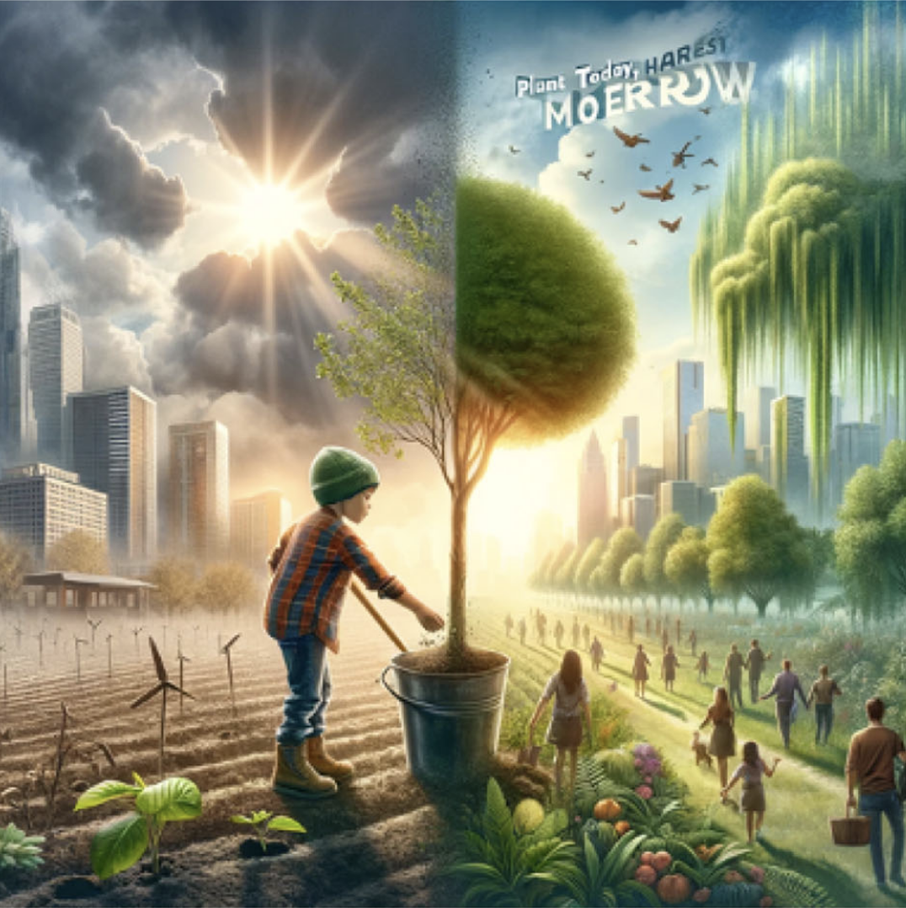
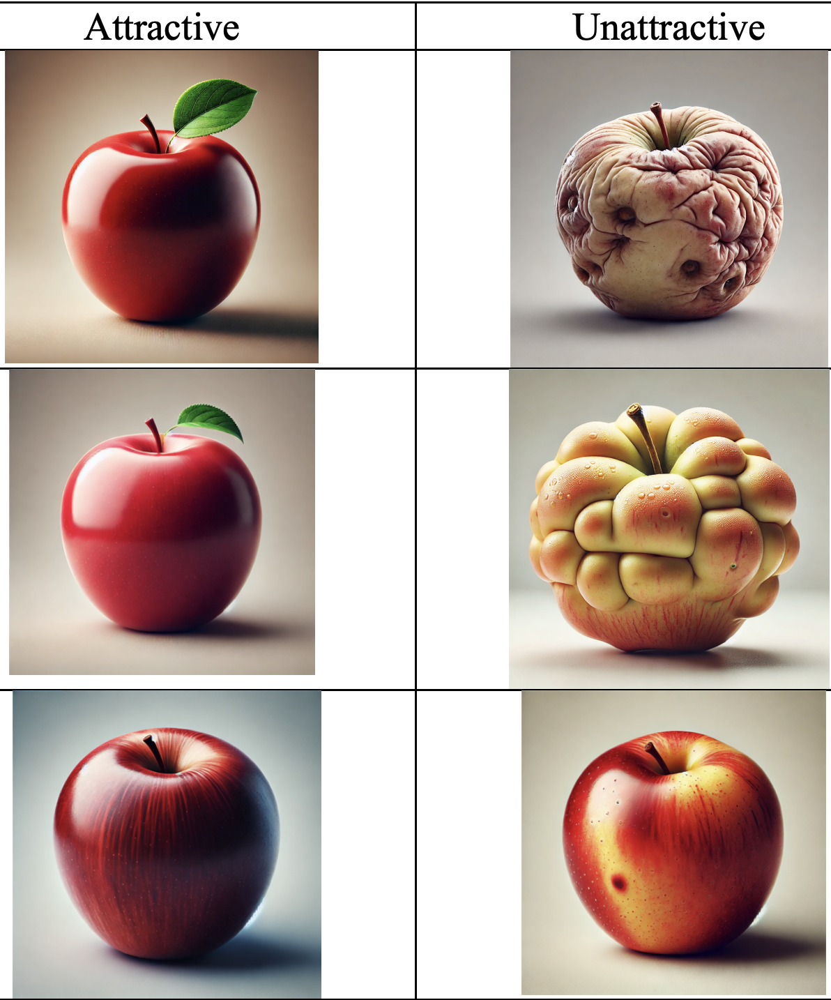
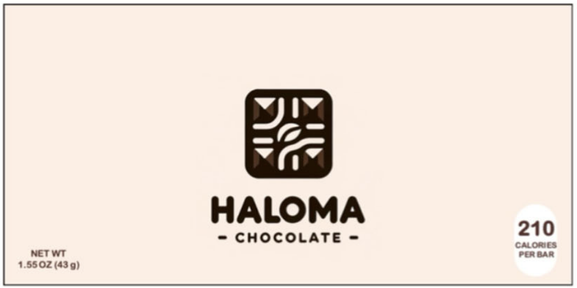
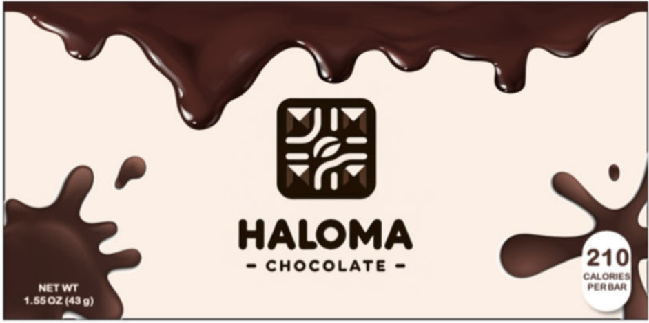
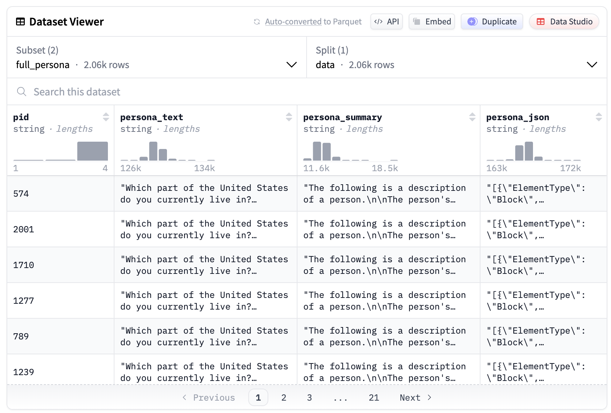

AI in Data Collection
Day 2 - Block 2
DGPs, instruments, and AI
Let’s think about a DGP that we measure with “instruments” (e.g. survey, experiment, administrative data, …)
| DGP | Instrument | AI example |
|---|---|---|
| Natural | Same | Generating stimuli images |
| Natural | New | AI qualitative interviewer |
| AI | Both | Synthetic respondents |
Natural DGP, same instruments

Natural DGP, same instruments

Natural DGP, same instruments


“How complex do you think the design of the presented product is? (1=simple, 9=complex)” [@sarstedt2024using]
Natural DGP, NEW instruments
Traditionally:
- quantitative data is “long” (large \(N\), small \(d\))
- qualitative data is “wide” (small \(N\), large \(d\))
. . .
This mustn’t be the case anymore!
AI DGP
- Synthetic respondents
- AI decision making (e.g. AI online shoppers)
Synthetic respondents
Step 1: Covariates
| id | Age | Charity Frequency | Income Level |
|---|---|---|---|
| 1 | 45 | Occasionally | Middle |
Step 2: Background Story Prompt [@moonVirtualPersonasLanguage2024]
Prompt:
BACKGROUND A 45-year-old donor who gives to charity occasionally, with a middle income level. QUESTION Would you donate to this new cause? ANSWER
Response:
Yes, I would consider donating, especially if I felt the cause was important.
Step 3: Record Answers
Why might this work?
- Explain algorithmic fidelity concept
- Discuss why LLMs can work as proxies
- Reference hybrid approach
- Massive pre-training, emergent behavior [@argyle2023out; @dillionCanAILanguage2023]
- Hybrid approach [@arora2025ai]
Mixed Evidence
- Comprehensive literature review table
- Key insights from recent research
✅: @arora2025ai, @moonVirtualPersonasLanguage2024, @parkGenerativeAgentSimulations2024, @liFrontiersDeterminingValidity2024
0️⃣: @hermannSelfdrivingLabsNew2025, @goliFrontiersCanLarge2024, @gui2023challenge
❌: @linSixFallaciesSubstituting2025, @strombergBlindSpotsBroad2025
Twin-2k-500 dataset
